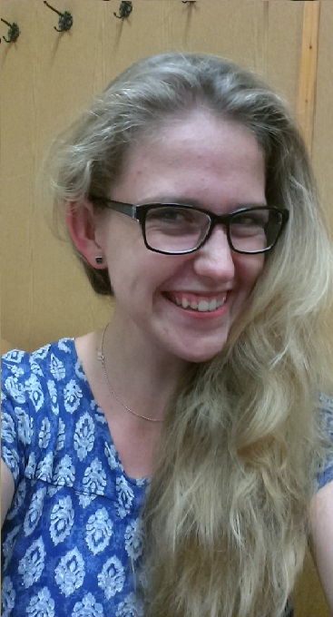
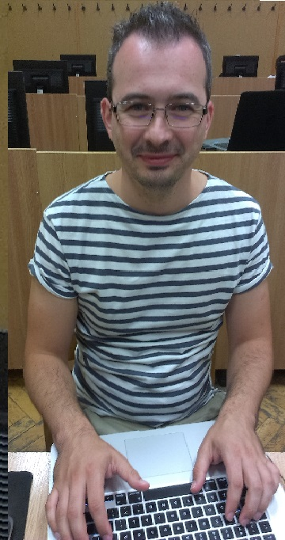
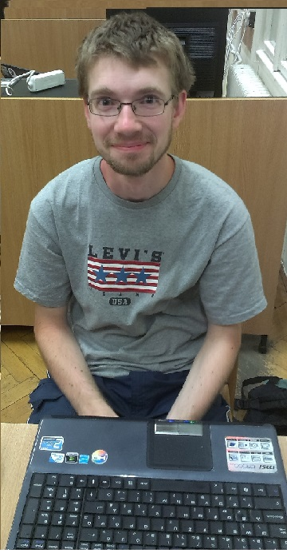
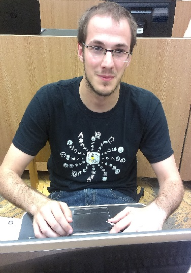

About US
We are an multinational team B whose task was to create the solution for detecting vegetation from the images of the roadside.
So, let us introduce ourselves....
Zuzanna Czekaj (POLAND)

My name is Zuzanna. I'm almost master at Biomedical Engineering at University of Technology in Poznań. It was my first contact with image processing, that is why I dealt with the documentation and web designing. It was an interesting experience to cooperate with three IT specialist, but I really like challenges, that is why I'm glad to be part of the SSIP 2016.
Adrian Mihai (ROMANIA)

My name is Mihai. I am studying masters at West University of Timisoara in Romania. The master program is Artificial Intelligence and Distributed Computation.
Some of the main fields that I'm studying are Distributed or Parallel Computation and cloud technologies. During the master program I have worked at a some projects that were processing images on a Parallel or Distributed environments. The projects increased my interest in image processing field and I glad that I am one of the participants at SSIP 2016.
Karai Gábor (HUNGARY)

My name is Gabor. I'm a Bsc student of Software Information Technology at University of Szeged. During my studies I found the digital image processing one of the most interesting topics of my studies. My current research field is skeletonization but soon I want to get involved in almost every specialization of image processing. My plan is to start my master studies after graduation. I feel that I gained so much experience during SSIP 2016.
Marko Ratković (CROATIA)

My name is Marko. I'm Master's student of Computer Science at University of Zagreb, Faculty of Electrical Engineering and Computing. My main field of study is bioinformatics, machine learning and data science in general but recently I started getting more and more involved in field of computer vision and image processing. SSIP 2016 was an interesting experience and I'm glad to be part of it.